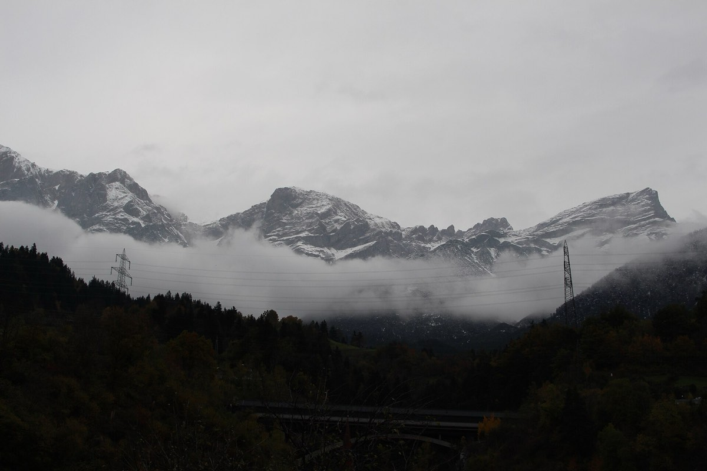

Tocht 1Lechtaler Alpen · Tirol · Lechtal ↔ Stanzertal
Lechtaler Höhenweg
De klassieke Höhenweg door de Lechtaler Alpen, het grootste berggebied van Noord-Tirol. We overnachten in twee van de mooiste hutten van het gebergte. Hoogtepunt is de overgang via de Grießlscharte (2.632 m); vanaf de hutten lonken toppen van bijna 3.000 meter.
Mogelijke data: vr 11–zo 13 juni óf vr 13–zo 15 augustus 2027
- Loopdagen3
- Afstandca. 21 km
- Stijgen / dalen+1.700 / −1.800 m
- Hoogteband1.300 – 2.632 m
- ZwaarteT2–T3
- Rijden vanaf Amsterdamca. 9 u
Verwacht in juni 8–12 °C en in augustus 11–13 °C overdag; ’s nachts 2–6 °C. Kans op middagonweer.
Dag tot dag
-
Vrijdag
Madau → Memminger Hütte
Vanaf het bergdorp Madau (1.308 m) klimmen we door het Parseiertal naar de Memminger Hütte (2.242 m). Een stevige maar goed te lopen aanloop met de Seewiseeën onderweg.
-
Zaterdag
Memminger Hütte → Ansbacher Hütte
De koningsetappe: via de Kopfscharte, het Winterjoch en de Grießlscharte (2.632 m, op één plek met staalkabel) naar de Ansbacher Hütte (2.376 m). Spectaculair panorama over beide dalen.
-
Zondag
Ansbacher Hütte → Flirsch (Stanzertal)
Vroeg op en afdalen naar Flirsch in het Stanzertal. Beneden staan we rond het middaguur bij de auto’s; daarna de terugreis naar Nederland.
Top-uitstapjes vanaf de hut
- Parseierspitze 3.036 m — vanaf Memminger Hütte, hoogste top van de Noordelijke Kalkalpen (~4 u, niet-gletsjer, zekere tred vereist)
- Oberlahmspitze 2.658 m — vanaf Memminger Hütte (~2 u)
- Samspitze 2.624 m — makkelijke huistop vanaf Ansbacher Hütte (~1 u)
- Vorderseespitze 2.889 m — vanaf Ansbacher Hütte (~3 u)
- Freispitze 2.884 m — vanaf Ansbacher Hütte
- Feuerspitze 2.852 m — vanaf Ansbacher Hütte
Overnachtingen
- Memminger Hütte 2.242 m DAV · ca. 140 slaapplaatsen · avondeten + ontbijt memmingerhuette.at
- Ansbacher Hütte 2.376 m DAV Sektion Ansbach · 84 slaapplaatsen · geen kaartbetaling ansbacherhuette.at